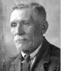
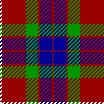

Thomas Meiklehose Fraser
Thomas Meiklehose Fraser 
| Birth | Marriage | Death |
| Ancestors | Brothers and Sisters | Descendants |
| Census | Homes and Schools | Occupation |
| SEARCH ENGINE | FAMILY TREES | FAMILY NAMES |
|
Name: |
Thomas Meiklehose Fraser |
|
When: |
17 November 1859 |
|
Where: |
22 Muir Street, Hamilton |
|
Father: |
|
|
Profession: |
Labourer, Ironworks |
|
Mother: |
|
|
Informant: |
Andrew Fraser, Father. |
Source: New Register House, Edinburgh and his Canadian Passport.
|
When: |
March 4th. |
|
Where: |
Main Street, Harthill |
|
Groom: |
Thomas Fraser - Bachelor - Age 20. |
|
Profession: |
Plasterer (Journeyman) |
|
Address: |
Busby |
|
Father: |
Andrew Fraser, Slater and Plasterer, Master |
|
Mother: |
Jane Fraser M.S. Howie (Deceased) |
|
Bride: |
Sarah Brisbane - Spinster - Age 21. |
|
Profession: |
Printfield Worker |
|
Address: |
Busby |
|
Father: |
Daniel Brisbane, Printfield Labourer |
|
Mother: |
Sophia Brisbane M.S. Mills (Deceased) |
|
Signed: |
James Forrest Minister at the Free Church of Scotland |
|
Signed: |
James Kechans Witness |
|
Signed: |
Annie Reid Witness |
Source: New Register House, Edinburgh.
|
Name: |
Thomas Meikleham Fraser [really Meiklehose] |
|
When: |
August 11th at 10h 0m PM |
|
Age: |
66 |
|
Sex: |
M |
|
Occupation: |
Plasterer (Journeyman) |
|
Marital Status: |
Married |
|
Spouse: |
|
|
Where: |
104 Riverford Road, Glasgow |
|
Father: |
Andrew Fraser, Plasterer (deceased) |
|
Mother: |
Jean Fraser M.S. Hosie |
|
Cause: |
Carcinoma of Roof of mouth. |
|
Doctor: |
Daniel M. Thomson MBChB |
|
Reported by: |
Agnes Fraser. Daughter in law. |
Source: New Register House, Edinburgh.
Sarah Rodger was on holiday in Prestwick when her mother, Sophia Fraser, was called away because of Thomas's death.
Buried in Eastwood Cemetery, Glasgow.
Dr. Daniel Thomson also delivered Sarah Rodger.
Agnes Fraser was Thomas Fraser's (Puncle's) wife, who lived in the apartment
above the Frasers at 104 Riverford Road.
Did not find any of the pre-1855 Frasers in the Hamilton Old Parish
Registers even though the family was in Hamilton in both the 1851 and 1861
Hamilton censuses.
<<<< Sophia Fraser's brothers
and sisters >>>>
76 Muir Street
Tom's family before he was born.
In this census, Jane Fraser is listed as "Blind or Deaf and Dumb". It
is highly likely that Jane was deaf, and that this is the explanation why
her maiden surname is always different every time it is listed. A real
mystery solved!
| Andrew Fraser | Head | Mar | 27 | Plasterer | Lanark Hamilton |
| Jane Do. | Wife | Do. | 27 | . | Ayr Dalrymple (Blind or Deaf-and-Dumb) |
| Andrew Do. | Son | U | 2 | . | Lanark Hamilton |
| David Do. | Do. | U | 2 ms | . | Do. Do. |
1861 Census - Hamilton, Lanarkshire - Film 0103867 District 4 Page 6
27 Muir Street, Hamilton. - One room with one or more windows.
| Andrew Fraser | Head | Mar. | 37 | Slater & Plasterer | Lanark, Hamilton |
| Jane Do. | Wife | Do. | 35 | . | Ayrshire, Dalrymple |
| Andrew Do. | Son | Un. | 12 | Errand Boy | Lanark, Hamilton |
| David Do. | Do. | Do. | 10 | Scholar | Do. Do. |
| Jemima Do. | Daur. | Do. | 8 | Do. | Do. Do. |
| John Do. | Son | Do. | 5 | . | Do. Do. |
| Helen Do. | Daur. | Do. | 3 | . | Do. Do. |
| /Thomas Do. | Son | Do. | 1 | . | Do. Do. |
1871 Census - Hamilton, Lanarkshire - Film 0104038 ED 1 Page 46.
6 Beckford Street, Hamilton.
Thomas's mother Jane Hose has died and he now has a step-mother Helen
McLare.
| Andrew Frazer | Head | Mar. | 47 | Slater & Plasterer | Lanark Hamilton |
| Helen McLaird | Wife | do. | 25 | do Holytown | |
| John Frazer | Son | 15 | Slater | do do | |
| Helen do. | Daur. | 13 | Message Servant | do do | |
| Thomas do. | Son | 11 | Scholar | do do | |
| Jane do | Daur | 9 | do | do do | |
| William do | Son | 7 | do | do do | |
| Andrew do | do | 3 | do do | ||
| Mary do | Daur | 1 | do do |
1881 Census - Shotts (Eastern District), Lanarkshire - Film 0203704 655-2 ED 1 Page 10
Main Street, Linds Land, Harthill, Shotts (Eastern District)
| Thomas Fraser | Head | Mar | 21 | Ironstone Miner | Lanark Hamilton |
| Sarah Do. | Wife | Mar | 22 | . | Ayrshire Stevenston |
1881 Census - Hamilton, Lanarkshire - Film 0203692 ED 12 Page 33&34
19 Holmes Street.
Thomas' father, stepmother, brother William, and many step-siblings.
| Andrew Fraser | Head | Mar | 57 | Slater & Plasterer | Lanarkshire Hamilton |
| Ellen Do. | Wife | Mar | 34 | Do. Holytown | |
| William Do. | Son | Unm | 17 | Slater | Do. Hamilton |
| Andrew Do. | Son | Unm | 13 | Scholar | Do. Do. |
| Mary Do. | Daur | 11 | Do. | Do. Do. | |
| Alexander Do. | Son | 9 | Do. | Do. Do. | |
| Ann Do. | Daur | 7 | Do. | Do. Do. | |
| Jessie Do. | Daur | 4 | Do. Do. | ||
| Loudon Do. | Son | 2 | Do. Do. | ||
| Eliza Barbara Do. | Daur | 2Mo | Do. Do. |
1881 Census - Mearns, Renfrewshire - Film 0203578 ED 2 Page 1
Cottage Row.
Thomas' older sister, Jemima and family, and also his younger sister, Jane..
| Nathaniel Dunsheath | Head | Mar | 30 | Ireland | |
| Jemima Do. | Wife | Mar | 28 | Hamilton Lanarkshire | |
| Andrew Do. | Son | 8 | Busby Renfrewshire | ||
| Esther Do. | Daur | 6 | Do. Do. | ||
| William John Do. | Son | 4 | Do. Do. | ||
| Jane Do. | Daur | 2 | Do. Do. | ||
| Jane Frazer | Sister in Law | Unm | 19 | Hamilton Lanarkshire |
1891 Census - Eastwood, Renfrewshire - Film 0220181 Ed 6 Page 30.
11 Wilson Street, Eastwood, Pollokshaws, Renfrewshire.
| Thomas Fraser | Head | Mar | 30 | Plasterer | Lanarksh Hamilton |
| Sarah Do. | Wife | Do. | 30 | . | Ayrshire Stevenston |
| Sophia Do. | Daur | . | 7 | Scholar | Renfrewshire Govan |
| Thomas Do. | Son | . | 9 Mos. | . | Do. Neilston |
1891 Census - Hamilton, Lanarkshire - Film 0220344 Ed 11 Page 36.
23 Gateside St.
Tom's step-sister Mary Penman Fraser has married and started a family.
| Thomas Graham | Head | Mar | 25 | Coal Miner | Stirlingshire Buthkenny |
| Mary do. | Wife | do | 21 | . | Lanarkshire Hamilton |
| Nelly do. | daur | . | 1 | . | do do |
| Adam do. | Son | . | 3 months | . | do do |
1901 Census - Eastwood, Renfrewshire - Entry 203, Page 39 of 54..
38 Maxwell St., Pollockshaws, Eastwood, East Renfrewshire.
| Thomas Fraser | Head | Mar | 41 | Plasterer | Worker | Lanarkshire Hamilton | 2 rooms |
| Sarah do. | Wife | Mar | 42 | Ayrshire Stevenston | |||
| Sophia do. | Daur | S. | 17 | Cotton Weaver | Worker | Lanarkshire Govan | |
| Thomas do. | Son | 11 | Scholar | Renfrewshire Barrhead | |||
| James do. | Son | 7 | do. | do. P'Shaws |
Other descendants:
Kenneth Fraser (amfraser@onetel.net.uk
)
Andrew Fraser (c1801) and Jane Haddow
Hamilton
Andrew Fraser (1823/24) and Ellen
McLair
Loudon Hamilton Fraser (1882) and
Agnes McQueen Robertson
Andrew Fraser Graham (andy@afg1960.wanadoo.co.uk
)
Andrew Fraser (c1801) and Jane Haddow
Hamilton
Andrew Fraser (1823/24) and Ellen
McLair
Mary Penman Fraser (1869) and Thomas
Graham
Andrew Fraser Graham (1894) and Jean
Forsyth Pollock
Tall, handsome and fair haired. Later in life he had a big white moustache and beard.
Did the fancy plaster cornice work you can see a lot in Glasgow houses.
Went out to Ontario, Canada in 1923 to join his son James and look for employment, but returned to Scotland.
Very fond of a drink. Had to hand over his pay packet to Sarah, so on pay day used to seal a florin up in the plaster of the house he was working on, and then dig it out later at an appropriate time.
Said of his wife, "When I married ye, Sarah, I lo'ed ye so much I could have eaten ye. And I wisht tae God I hud!"
Good singer. Always singing and reciting poetry.
Clay pipe smoker. (Probable cause of his mouth cancer)
Knew the stars and constellations.
Some connection with the Inverness area?
Fraser Tartan 
Return to top of page or Family Name Page.
Last Updated: January 12, 2007.
Number of visitors since February 1999 -
FastCounter
by LinkExchange